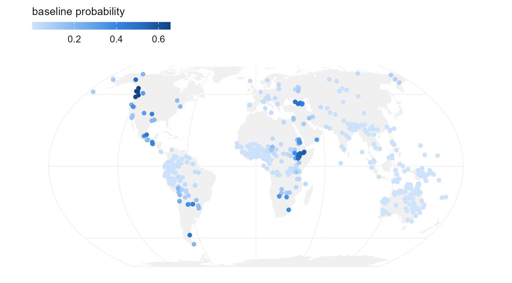
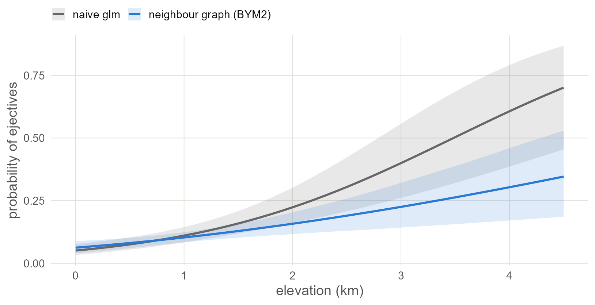

7 Space as a network of neighbours
Link each language to the languages around it and let every language lean towards the average of its neighbours.
7.1 Set up
library(brms)
library(spdep)
library(sf)
library(rnaturalearth)
library(ggplot2)
base <- "https://rehan-muh.github.io/tutorials/data/"
d <- read.csv(paste0(base, "languages.csv"))
d$elev_km <- d$elevation / 1000
options(mc.cores = 4, brms.backend = "cmdstanr")
dir.create("fits", showWarnings = FALSE)7.2 The idea
The Gaussian process in Chapter 6 measured distances. The models in this chapter only ask who is next to whom. You draw a graph with a link between every pair of neighbouring languages, and the model gives each language a spatial effect that is expected to equal the average of its neighbours’ effects:
\[\phi_i \mid \phi_{\text{others}} \sim \mathcal{N}\!\left(\frac{1}{n_i}\sum_{j \sim i} \phi_j,\ \frac{\sigma^2}{n_i}\right)\]
Here \(j \sim i\) runs over the \(n_i\) neighbours of language \(i\). This is the intrinsic conditional autoregressive model, ICAR (Besag 1974). It was designed for areas such as counties, which have borders and therefore natural neighbours. Languages recorded as points have no borders, so the graph is yours to define, and that definition is the main modelling decision in this chapter.
7.3 Building the graph
A simple, defensible rule is to link every language to its five nearest languages by great-circle distance and make every link mutual.
coords <- as.matrix(d[, c("lon", "lat")])
nb <- knn2nb(knearneigh(coords, k = 5, longlat = TRUE))
nb <- make.sym.nb(nb)
summary(card(nb)) # number of neighbours per language## Min. 1st Qu. Median Mean 3rd Qu. Max.
## 5.00 5.00 6.00 6.43 7.00 10.00## [1] 1After the links are made mutual, languages have between 5 and 10 neighbours. The second number matters more. It says the graph is in one piece, which the models below need. If n.comp.nb() reports more than one piece, raise k until it reports one.
Always look at the graph.
world <- ne_countries(scale = "small", returnclass = "sf")
pts <- st_as_sf(d, coords = c("lon", "lat"), crs = 4326)
links <- nb2lines(nb, coords = st_geometry(pts))
# split the links that cross the 180th meridian, so they are drawn the short way
links <- st_wrap_dateline(links, options = c("WRAPDATELINE=YES",
"DATELINEOFFSET=60"))
ggplot() +
geom_sf(data = world, fill = "grey94", colour = NA) +
geom_sf(data = links, colour = "#2A78D6", linewidth = 0.25) +
geom_sf(data = pts, size = 0.5) +
coord_sf(crs = "+proj=eqearth")
Figure 7.1: The five-nearest-neighbour graph. Most links are short. The graph holds together through a few longer ones: across the Bering Strait, through Central America, and from Australia to New Guinea.
brms takes the graph as a matrix W with a 1 wherever two languages are linked. Its row names must match a column of the data.
7.4 ICAR
The spatial term is car(). It names the matrix, the column that identifies the rows, and the type of model.
priors <- prior(normal(0, 1), class = b) +
prior(exponential(1), class = sdcar)
m_icar <- brm(ejectives ~ elev_km + car(W, gr = glottocode, type = "icar"),
data = d, data2 = list(W = W),
family = bernoulli(), prior = priors,
seed = 1, file = "fits/m_icar")
summary(m_icar)## Family: bernoulli
## Links: mu = logit
## Formula: ejectives ~ elev_km + car(W, gr = glottocode, type = "icar")
## Data: d (Number of observations: 500)
## Draws: 4 chains, each with iter = 2000; warmup = 1000; thin = 1;
## total post-warmup draws = 4000
##
## Correlation Structures:
## Estimate Est.Error l-95% CI u-95% CI Rhat Bulk_ESS Tail_ESS
## sdcar 4.04 1.00 2.45 6.31 1.00 860 1867
##
## Regression Coefficients:
## Estimate Est.Error l-95% CI u-95% CI Rhat Bulk_ESS Tail_ESS
## Intercept -7.83 1.68 -11.67 -5.20 1.01 494 1071
## elev_km 1.18 0.36 0.53 1.95 1.00 1709 2821
##
## Draws were sampled using sample(hmc). For each parameter, Bulk_ESS
## and Tail_ESS are effective sample size measures, and Rhat is the potential
## scale reduction factor on split chains (at convergence, Rhat = 1).sdcar is the standard deviation of the spatial effects. It is not on the same footing as sd in Chapter 3 or sdgp in Chapter 6, because its meaning depends on how many links the graph has. That is one reason to prefer the next model.
7.5 BYM2
ICAR forces all the extra variation to be spatially smooth. BYM2, named after Besag, York and Mollié (1991) and used here in the scaled form of Riebler et al. (2016), splits each language’s effect into a smooth part and an independent part, and estimates the mix:
\[u_i = \sigma\left(\sqrt{\rho}\,\phi_i^{*} + \sqrt{1-\rho}\,\theta_i\right)\]
\(\phi^{*}\) is the ICAR effect rescaled to have variance near 1, \(\theta\) is plain independent noise, and \(\rho\) is the share of the variance that is spatial. Because of the rescaling, \(\sigma\) is an ordinary standard deviation and the exponential(1) prior means what it meant in Chapter 3.
m_bym <- brm(ejectives ~ elev_km + car(W, gr = glottocode, type = "bym2"),
data = d, data2 = list(W = W),
family = bernoulli(), prior = priors,
seed = 1, file = "fits/m_bym")
summary(m_bym)## Family: bernoulli
## Links: mu = logit
## Formula: ejectives ~ elev_km + car(W, gr = glottocode, type = "bym2")
## Data: d (Number of observations: 500)
## Draws: 4 chains, each with iter = 2000; warmup = 1000; thin = 1;
## total post-warmup draws = 4000
##
## Correlation Structures:
## Estimate Est.Error l-95% CI u-95% CI Rhat Bulk_ESS Tail_ESS
## rhocar 0.96 0.04 0.87 1.00 1.00 831 1176
## sdcar 5.21 1.27 3.19 8.18 1.01 559 1623
##
## Regression Coefficients:
## Estimate Est.Error l-95% CI u-95% CI Rhat Bulk_ESS Tail_ESS
## Intercept -7.68 1.59 -11.32 -5.14 1.02 264 1388
## elev_km 1.17 0.37 0.52 1.97 1.00 1055 1902
##
## Draws were sampled using sample(hmc). For each parameter, Bulk_ESS
## and Tail_ESS are effective sample size measures, and Rhat is the potential
## scale reduction factor on split chains (at convergence, Rhat = 1).The Stan implementation behind car() follows M. Morris et al. (2019). rhocar near 1 says that almost all the extra variation is shared between neighbours; near 0 it would say the languages vary independently and the graph is not helping.
The effective sample size of the intercept is in the hundreds, well below the slope’s. Neighbour models mix slowly in the intercept because every spatial effect can shift against it. The estimate is still usable, but if a Bulk_ESS drops below about 400, add iter = 4000 to the call and let it run longer.
sea_level <- transform(d, elev_km = 0)
pts$baseline <- fitted(m_bym, newdata = sea_level)[, "Estimate"]
ggplot() +
geom_sf(data = world, fill = "grey94", colour = NA) +
geom_sf(data = pts[order(pts$baseline), ], aes(colour = baseline),
size = 1.6) +
scale_colour_viridis_c(name = "baseline probability") +
coord_sf(crs = "+proj=eqearth")
Figure 7.2: The BYM2 baseline at each language: the probability of ejectives the model expects there at sea level. Compare the surface in Chapter 6.
7.6 The regression line
Draw the model’s regression line beside the naive one. As in Chapter 3, the fair comparison is the line averaged over the sample: keep each language’s own spatial effect, move all 500 languages to the same elevation, and take the share expected to have ejectives.
m0 <- glm(ejectives ~ elev_km, family = binomial, data = d)
x <- seq(0, 4.5, by = 0.1)
pr <- predict(m0, newdata = data.frame(elev_km = x), se.fit = TRUE)
naive <- data.frame(elev_km = x, model = "naive glm", p = plogis(pr$fit),
lo = plogis(pr$fit - 1.96 * pr$se.fit),
hi = plogis(pr$fit + 1.96 * pr$se.fit))
b <- as_draws_df(m_bym)$b_elev_km
eta <- posterior_linpred(m_bym) # draws by languages, logit scale
at_sea <- eta - outer(b, d$elev_km) # every language moved to 0 km
p <- sapply(x, function(xi) rowMeans(plogis(at_sea + b * xi)))
model <- data.frame(elev_km = x, model = "neighbour graph (BYM2)",
p = colMeans(p),
lo = apply(p, 2, quantile, 0.025),
hi = apply(p, 2, quantile, 0.975))
ggplot(rbind(naive, model), aes(elev_km, p, colour = model, fill = model)) +
geom_ribbon(aes(ymin = lo, ymax = hi), alpha = 0.15, colour = NA) +
geom_line(linewidth = 0.9) +
scale_colour_manual(values = c("grey40", "#2A78D6"),
aesthetics = c("colour", "fill"), name = NULL) +
labs(x = "elevation (km)", y = "probability of ejectives")
Figure 7.3: The naive regression line (grey) and the BYM2 line averaged over the sample (blue), with 95% bands. It is close to the Gaussian-process line in Chapter 6, although the two models describe space differently.
7.7 How much does the graph matter?
The graph was a choice, so vary it. Build a denser one with ten nearest neighbours and refit.
nb10 <- make.sym.nb(knn2nb(knearneigh(coords, k = 10, longlat = TRUE)))
W10 <- nb2mat(nb10, style = "B")
dimnames(W10) <- list(d$glottocode, d$glottocode)
m_bym10 <- brm(ejectives ~ elev_km + car(W, gr = glottocode, type = "bym2"),
data = d, data2 = list(W = W10),
family = bernoulli(), prior = priors,
seed = 1, file = "fits/m_bym10")
slopes <- rbind(fixef(m_icar)["elev_km", ], fixef(m_bym)["elev_km", ],
fixef(m_bym10)["elev_km", ])
rownames(slopes) <- c("ICAR, k = 5", "BYM2, k = 5", "BYM2, k = 10")
round(slopes, 2)## Estimate Est.Error Q2.5 Q97.5
## ICAR, k = 5 1.18 0.36 0.53 1.95
## BYM2, k = 5 1.17 0.37 0.52 1.97
## BYM2, k = 10 1.31 0.39 0.62 2.13Doubling the number of neighbours moves the slope a little and leaves the conclusion where it was. Report a check like this whenever you use a neighbour model on point data. If the conclusion changes with a reasonable change of graph, report that too, because it shows how far the data support the conclusion.
Watch out. Nearest-neighbour links ignore everything a linguist knows about contact. A link across the Sahara or the Bering Strait counts the same as one between adjacent villages. Other rules are a line of code away:
dnearneigh()links all pairs within a fixed distance, andtri2nb()orgabrielneigh()link natural neighbours without choosingk. You can also edit links by hand withedit.nb()or buildWyourself from a table of known contact.
With your own data. If your units really are areas (language polygons, countries, grid cells), read them with
sfand callpoly2nb()to link the ones that share a border. Everything afternbis the same.
7.8 Other models in the same family
car() also accepts type = "escar", the proper CAR model, which estimates how strongly neighbours pull on each other in place of assuming the maximum. Simultaneous autoregressive (SAR) models are a close relative with their own term, sar(), but brms fits them only for continuous outcomes; they appear in Chapter 8.
7.9 What to carry forward
- Neighbour models need a graph in one piece and a matrix
Wwhose row names match the data. car(W, gr = , type = "bym2")is the version to start with: its parameters have plain meanings, a standard deviation and a spatial share.- The graph is an assumption. Map it, and refit with a different graph to check that the conclusion holds.
The chapters so far each handled one kind of dependence. Chapter 9 puts ancestry and geography in the same model.
7.10 Further reading
How earlier studies implemented it. Neighbour models come from disease mapping, where the units are districts with borders (Besag et al. 1991). They have been rare in linguistics, where the earlier way of saying who is near whom was membership of an area: the continental areas of Dryer (1989) or a random intercept for area (Jaeger et al. 2011). A neighbour graph is the finer-grained version of the same idea, and the comparison with the surface models of Chapter 6 is what the spatial-statistics literature recommends before choosing either (Dormann et al. 2007).
Neighbour models have a long literature in disease mapping, and most of what is known about them comes from there.
- What the ICAR model is. Besag and Kooperberg (1995) is the standard account of intrinsic autoregressions and why they are improper priors. Ver Hoef et al. (2018) explain CAR and SAR models side by side for non-specialists.
- Scaling and priors. Riebler et al. (2016) introduce the BYM2 parameterisation and explain why the unscaled version has uninterpretable hyperparameters; Simpson et al. (2017) give the penalised-complexity priors that go with it. M. Morris et al. (2019) show the Stan implementation.
- Graphs in several pieces. This chapter insisted on a connected graph. Freni-Sterrantino et al. (2018) show how to scale and constrain an intrinsic model when the graph has islands, which is how INLA handles them.
- Alternatives to ICAR. The directed acyclic graph autoregressive model of Datta et al. (2019) has a proper, interpretable correlation parameter and often fits better than the proper CAR.